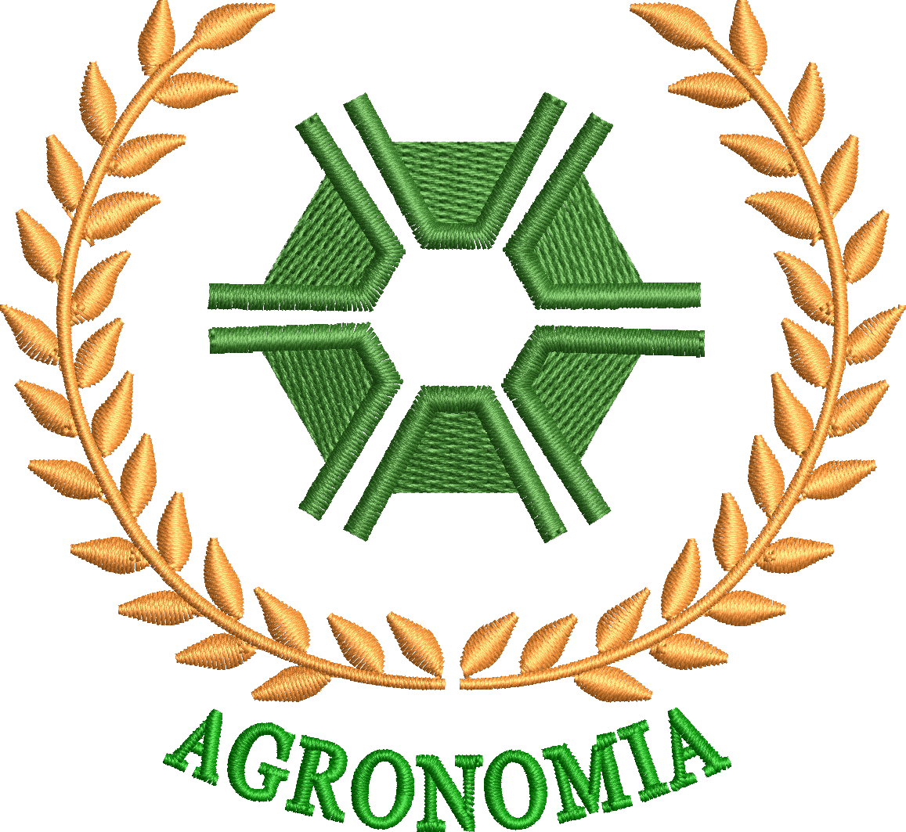
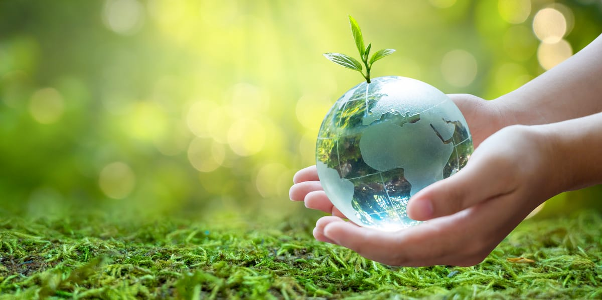
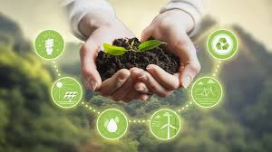

Equilíbrio entre Produção e Meio Ambiente

A agricultura produz alimentos e impulsiona a economia. A sustentabilidade busca equilibrar a produção agrícola com a preservação do meio ambiente para garantir um futuro melhor.

A agricultura sustentável é um modelo de produção que utiliza os recursos naturais de forma responsável, preservando o solo, a água, a biodiversidade e o clima. Esse sistema promove maior eficiência produtiva, reduz impactos ambientais e melhora a qualidade de vida das comunidades rurais.

Conservação dos recursos naturais. Redução dos impactos ambientais. Maior produtividade a longo prazo. Melhor qualidade dos alimentos. Economia de água e energia. Preservação da fauna e da flora.